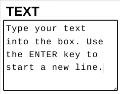

Draft is a simple but functional 2D drafting application written as a PWA - a progressive web app.
PWAs can be run online like any web app but can also be installed on your device via the menu in your browser.
The app uses SVG - scalable vector graphics - and is general-purpose but especially useful for technical drawings.
You can select various drawing sizes up to A4 in portrait or landscape orientations and you can draw to scale, organising drawings on up to 10 layers. Accurate drawing is aided by 'snap' to drawing elements, to a grid or orthogonally.
Keep reading and tap links to jump to particular sections.
Toolboxes appear on the left of the screen with either drawing tools or editing tools.
Whichever toolbox is visible there will be the styles box at the top with layers below it.
While drawing or editing elements you will often have information at the top of the screen, and sometimes you will interact with dialog boxes which appear at the top left corner.
The sequence is draw, select, edit and save.
Drawing is slightly different for the various drawing tools but usually involves tapping or dragging to position and size a drawing element. You use a mouse or a touch screen.
The document tool displays the DRAWING information - size, orientation and scale. You set these when you started a new drawing.

You can choose a grid size and whether to 'snap' elements to the grid, and there are buttons for saving drawings, starting new drawings and loading saved ones - see the files section.


The view controls let you zoom in or out (doubling or halving the magnification) or quickly return to the initial magnification and drawing position after zooming or moving around the drawing with the pan tool. The zoom tools are single-tap but you drag the drawing after tapping pan.
The curve tool lets you draw smoothed Bezier curves by dragging and the curve is drawn when you release the mouse button or lift your finger or stylus from a touchscreen.

Use the line tool to draw lines and shapes. Drag to draw a line segment. If you just want a single line, tap again at the end point. Otherwise, lifting the pointer ends the first segment and starts the next one. A tap at the end point finishes the line(s) and there is a limit of 10 segments. If you end a segment close to the start of the lines you will have a closed polygonal shape. While you are dragging a line segment you will see its length and direction at the top of the screen. Directions are shown as on a compass - degrees clockwise from 'north' at the top.

The box tool draws rectangles and squares. As you drag from a corner, the width and height will be shown and there is a degree of 'snap' making it easy to draw a square.

Draw circles or ellipses with the oval tool. This is very like drawing an box, but you start at the centre. Again, it is easy to constrain the oval to be circular.
The arc tool is for drawing circular arcs.You are prompted to drag from the start to the centre of the arc.
Often the arc will start from an existing node such as the end of a line.
When you release at the centre a blue radius is drawn with small arrows indicating clockwise or anticlockwise rotation and you can drag the radius to the end of the arc.
The radius and arc angle appear at the top of the screen.

To add text to a drawing, tap where you want it to start then type into the dialog which appears when you tap the text tool, then tap the TEXT button and your text will appear in the drawing.

You can use the dimension tool to add dimensions to drawing elements. Dimensions are 'attached' to nodes such as the ends of line segments or the corners of a box.
You will see prompts to tap on the start and end nodes of the element you are dimensioning, then to drag the blue guide line to where you want the dimension line drawn.
If the start and end points are not aligned horizontally of vertically, you must choose whether to draw the dimensiion orthoganally or obliquely (aligned with the element).
Tap the DIMENSION button to move on to positioning the dimension.
Dimensions are associated with the elements they are attached to and move with elements if they are moved and are recalculated if elements are resized. You cannot, though, have dimensions attached to separate elements.

Draft allows you to combine a number of drawing elements - boxes, lines, ovals, text, etc. - into sets A set can be any more complex item that yoou might want to repeat easily or which you might use in other drawings.
There is more about sets below, but this tool is how you add a set to your drawing: it brings up a list of the sets you have available and the one you choose is added - easy!.
Tapping any drawing element will select it allowing you to view its properties and move, edit or delete it if you wish. Blue guides are shown: lines denoting the shape of the element, a circle mover handle, one or more sizer handles, and small dots at nodes. The node dots are reminders to help you snap to element nodes, the sizer(s) can be dragged to resize or reshape elements, while the mover can be dragged to move the element and can act as an axis for rotating or mirroring it. When you select elements the drawing tools are replaced by editing tools . In this example the selected box has spin (it has 30° rotation) but the sizing box remains un-rotated to aid orthogonal snapping.
The selected element's style is reflected in the style box at the top left and its size and spin are shown in the information panel. When no elements are selected the style box shows the current default styling, used for new drawing elements.

You can select more then one element at a time, by tapping on the ones you want or by dragging a selection box around them. In this case styling and sizes differ from one element to another so no styling or sizes are shown, while blue rectangles indicate which elements are selected. You can drag them all at once or perform other operations such as aligning them. Tapping any blank part of the drawing cancels the selection and switches back to the drawing tools.
You can make changes to any selected drawing element, including the styling of the element or which layer it appears on, but styles and layers are described below.

The add tool is used to add segments to curves, lines or shapes. Tap add then tap a node. A new node will be inserted or appended after the node you choose and can then be dragged if you wish.

The reverse is remove. This tool is used to remove nodes (and thus segments) from curves, lines and shapes or to delete whole elements or all selected elements.